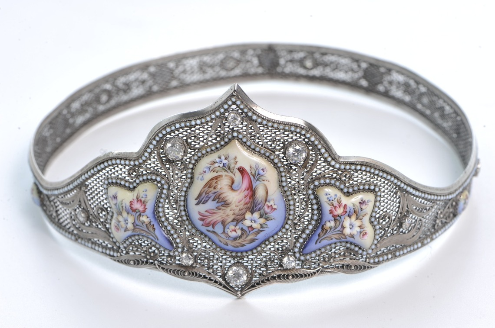

Финифть
Финифть
 Финифть
Финифть
Финифть (др.-рус. финиптъ, химипетъ, из ср.-греч. χυμευτόν, то же от χυμεύω — «смешиваю») — изготовление художественных произведений с помощью стекловидного порошка, эмали, на металлической подложке, вид прикладного искусства. Стеклянное покрытие является долговечным и не выцветает со временем, изделия из финифти отличаются особой яркостью и чистотой красок. 
Финифть представляет собой стекловидную массу (эмаль), наплавленную на выкованную особым образом металлическую пластину и расписанную надглазурными красками. В процессе изготовления финифти выделяют три стадии: изготовление пластин и покрытие их белой эмалью; роспись; ювелирное обрамление. Сегодня рецепты изготовления эмали мало отличаются от старинных: «Как золотожелтую финифть делать. Возьми три мерки сурику, 3 мерки сурмы да 1 мерку окалины железной и стопи все оныя вещи вместе; потом разотри, стопи опять и так многожды повторяй, то сделается совсем на золото похожий желтый цвет». Основой для изготовления эмалей могут служить медь, латунь, томпак (латунь с более низким содержанием цинка).
Краски поэтапно вплавляются в поверхность эмали в муфельной печи при температуре 700-900º С. Технология изготовления делает финифть исключительно долговечной: так, самые ранние из найденных археологами эмалей сохранили свой вид спустя три тысячелетия.